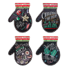

Статьи


Как сухой массаж тела щеткой помогает избавиться от целлюлита и почему она лучше скраба
Сухой массаж тела щеткой — многовековой ритуал красоты, который обожают голливудские звезды и супермодели. Однако популярность beauty-процедуры не уменьшает количество вопросов. Действительно ли сухая чистка щетками из натуральной щетины — залог эластичной и подтянутой кожи? Может ли сухая чистка тела улучшить общее состояние здоровья? Почему расчесывать кожу натуральной щетиной эффективнее чем использовать скраб? МПР нашел ответы на все эти вопросы. Сегодня косметологи и дерматологи рассказывают, кому подходит данная процедура и настолько она эффективна.
Рекомендуемый товар

Что такое сухой массаж тела щеткой
Вы берете щетку из натуральной щетины и нежно массируете тело
«Сухая чистка тела щетками с натуральной щетиной — моя любимая
Сухая чистка тела: все, что нужно сделать для здоровой и красивой кожи
Косметолог советует проводить процедуру перед принятием душа. Начните со стоп и направляйтесь
к области сердца. Особое внимание уделяйте проблемным зонам — внутренней
поверхности бедер и рук, животу, спине, ягодицам. Сухая чистка мгновенно запускает
кровообращение,
Преимущества сухой чистки тела щеткой из натуральной щетины
- Улучшает кровообращение. Если после процедуры кожа покраснела, не переживайте. Это не раздражение. Это усилилось кровообращение в обработанных зонах.
- Эффективный лимфодренаж. Массаж натуральной щетиной увеличивает скорость перекачивания крови, ускоряя вывод токсинов. Если вы обеспечите нормальное перемещение лимфы по организму, то не столкнетесь с варикозным расширением вен, отечностью и ослабленным иммунитетом.
- Отшелушивающий эффект. Щетка очищает тело от грязи, жира, ороговевших клеток, благодаря чему она становится мягкой, гладкой и сияющей.
- Антицеллюлитный эффект. Регулярная чистка повышает эластичность и упругость, стимулирует выработку коллагена, помогает избавиться от целлюлита.
- Повышает эффективность косметических средств. Когда кожа полностью очищена, она готова поглощать питательные и увлажняющие компоненты, которые с легкостью проникают в глубокие слои дермы и лучше справляются со своими прями обязанностями.
- Массажный антистрессовый эффект. Массаж в любых его проявлениях помогает расслабить мышцы, избавиться от стресса и напряжения.
Помогает ли сухая чистка тела избавиться от целлюлита
Данный вид
Вывод: Стоит ли покупать щетку для сухой чистки кожи тела
Дерматологи и косметологи сходятся во мнении, что регулярное применение щетки с натуральной щетиной улучшает циркуляцию крови и лимфы, уменьшает «апельсиновую корку», повышает эластичность кожи, делает ее гладкой, мягкой и красивой. Вы избавляетесь от слоя омертвевших клеток, которые делают кожу тусклой не позволяют уходовым средствам проникать глубоко в дерму. Предотвращает закупоривание пор и врастание волосков после бритья и эпиляции. Эпидермис лучше усваивает питательные вещества кремов и лосьонов.
Расчешите кожу до идеального состояния нашими щетками из натуральной щетины. Это идеальный выбор для домашней сухой чистки, который выполняет сразу 2 функции — отшелушивание и массаж. С одной стороны щетки находится натуральная щетина для скрабирования тела, а с другой — массажные пальчики, которые усилят эффект от первой процедуры. Помогает расслабить мышцы, избавиться от напряжения и погрузиться в мир релакса. Длинная цельная ручка из дерева облегчает проведение процедуры. Используйте перед душем или походом в баню. Вас ждут потрясающие ощущения.


Подходящие товары

Подставка под горячее, 20х20см, керамика, "Ё...
4,4
Подставка под горячее, 20х20см, керамика,
"Ёлка...
4,4
Подставка под горячее, 20х20см, керамика,
"Ёлка...
4,4
Подставка под горячее, 20х20см, керамика,
"Ёлка...
4,4
Маска для глаз тканевая круговая HYDRA NOUR...
4,4
Маска для глаз тканевая круговая HYDRA NOUR...
4,4
Подставка под горячее, 20х20см, керамика,
"Ёлка...
4,4
Подставка под горячее, 20х20см, керамика,
"Ёлка...
4,4
Подставка под горячее, 20х20см, керамика,
"Ёлка...
4,4